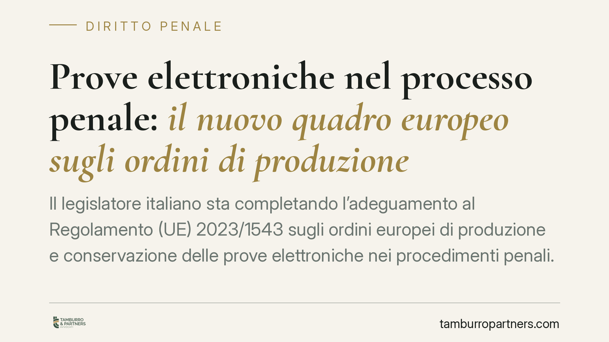

Prove elettroniche nel processo penale: il nuovo quadro europeo sugli ordini di produzione e conservazione
Il legislatore italiano sta completando l'adeguamento al Regolamento (UE) 2023/1543 sugli ordini europei di produzione e conservazione delle prove elettroniche nei procedimenti penali. Il nuovo canale consente all'autorità giudiziaria di rivolgersi direttamente ai prestatori di servizi stabiliti in altro Stato membro, superando la rogatoria. Le sanzioni per i prestatori inadempienti arrivano fino al 2% del fatturato annuo mondiale.

Il quadro normativo
Il Regolamento (UE) 2023/1543, applicabile dal 18 agosto 2026, disciplina gli ordini europei di produzione e di conservazione delle prove elettroniche nei procedimenti penali. L'adeguamento dell'ordinamento italiano è affidato a un decreto legislativo attuativo, in corso di pubblicazione in Gazzetta Ufficiale: estremi, numero e data vanno confermati sul testo ufficiale prima di ogni utilizzo operativo. Analogo rilievo vale per il massimale sanzionatorio nazionale, che indichiamo di seguito solo nei limiti del dato eurounitario certo.
Una precisazione terminologica, spesso fonte di errore. L'EPO (*European Production Order*) è l'ordine europeo di produzione: impone al prestatore di consegnare i dati richiesti. L'EPO-PR (*European Preservation Order*) è l'ordine europeo di conservazione: obbliga a congelare i dati in attesa di una successiva richiesta di produzione. I certificati che accompagnano e danno esecuzione a tali ordini sono l'EPOC e l'EPOC-PR. In sintesi: EPO/EPO-PR sono gli ordini, EPOC/EPOC-PR i certificati esecutivi.
Termini e tipologie di dati
L'art. 10 del Regolamento scandisce i tempi di risposta del prestatore. In via ordinaria la produzione è dovuta entro dieci giorni dalla ricezione del certificato; nei casi di emergenza — situazione di minaccia imminente alla vita, all'integrità fisica o a un'infrastruttura critica — il termine si riduce a otto ore. Questi termini, e la nozione di emergenza, vanno riverificati puntualmente sul testo, perché condizionano la validità della richiesta.
Il Regolamento distingue le categorie di dati (dati relativi agli abbonati, al traffico, al contenuto), con presupposti e garanzie crescenti. L'ordine di produzione dei dati di contenuto e di traffico richiede un procedimento per reati puniti con soglie edittali più elevate e, di regola, la convalida o l'emissione da parte del giudice.
L'impatto sul sistema processuale italiano
Il nuovo canale si innesta su istituti già presenti nel codice di rito. L'art. 234-bis c.p.p. consente l'acquisizione di documenti e dati informatici conservati all'estero con il consenso del legittimo titolare; l'art. 254-bis c.p.p. disciplina il sequestro di dati presso i fornitori di servizi informatici e di comunicazione. Con gli ordini europei il paradigma cambia: non più acquisizione mediata dalla cooperazione tra Stati, ma rapporto diretto autorità-prestatore.
Da qui due profili critici. Il primo riguarda l'utilizzabilità: una prova acquisita in violazione dei presupposti o dei termini del Regolamento apre al tema della sua spendibilità processuale e dei rimedi, dalla contestazione in sede di merito alle patologie dell'atto. Il secondo attiene alla catena di custodia: la genuinità e l'integrità del dato elettronico restano il banco di prova decisivo, come già per ogni evidenza digitale. Va inoltre coordinato il rapporto con l'art. 132 del Codice Privacy sui dati di traffico, la cui conservazione e acquisizione conosce regole specifiche.
Implicazioni pratiche
Per i prestatori di servizi l'esposizione è significativa. L'inosservanza dell'ordine può comportare sanzioni pecuniarie: l'art. 15 del Regolamento (UE) 2023/1543 fissa un massimale pari al 2% del fatturato annuo mondiale totale dell'esercizio precedente; l'importo in valore assoluto eventualmente previsto dalla norma attuativa nazionale va verificato sull'articolo specifico del decreto.
Per la difesa si amplia il perimetro delle prove acquisibili senza rogatoria, ma anche quello dei possibili vizi: diventa essenziale verificare a monte legittimità dell'ordine, categoria dei dati, rispetto dei termini e integrità dell'acquisizione.
Per la persona offesa il canale diretto può tradursi in tempi d'indagine più rapidi su reati commessi con mezzi informatici.
Cosa fare in concreto
- Verificare gli estremi ufficiali: prima di ogni atto, controllare numero, data e testo del decreto attuativo in Gazzetta Ufficiale.
- Mappare i dati e i prestatori coinvolti: identificare categoria di dato (abbonato, traffico, contenuto) e sede del prestatore, perché cambiano presupposti e garanzie.
- Controllare i termini: riscontrare se la richiesta rientra nel regime ordinario (dieci giorni) o di emergenza (otto ore) e se la nozione di emergenza è integrata.
- Documentare la catena di custodia: pretendere tracciabilità completa dell'acquisizione, a fini di utilizzabilità.
- Predisporre la compliance (prestatori): adottare procedure interne di risposta e un punto di contatto dedicato per ridurre l'esposizione sanzionatoria.
Contributo informativo a cura di Tamburro & Partners - Avv. Giuseppe Tamburro. Non costituisce parere legale.
Ogni condominio ha una storia a sé.
Se gestisci un'amministrazione e vuoi un confronto su una specifica questione condominiale, scrivi allo studio. Ti rispondiamo entro un giorno lavorativo.